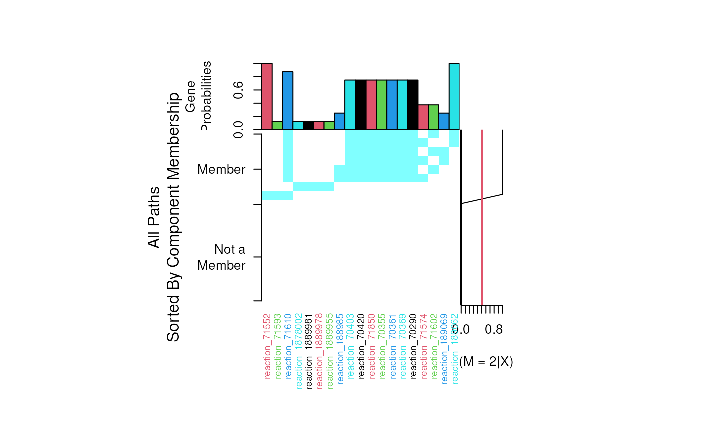

Plots the structure of specified path found by pathCluster.
plotPathCluster(ybinpaths, clusters, m, tol = NULL)The training paths computed by pathsToBinary.
The pathway cluster model trained by pathCluster or pathClassifier.
The path cluster to view.
A tolerance for 3M parameter theta which is the probability for
each edge within each cluster. If the tolerance is set all edges with a theta
below that tolerance will be removed from the plot.
Produces a plot of the paths with the path probabilities and cluster membership probabilities.
An image of all paths the training dataset. Rows are the paths and columns are the genes (features) included within each path.
The training set posterior probabilities for each path belonging to the current 3M component.
Theta, The 3M component probabilities - indicates the importance of each edge to a pathway.
Other Path clustering & classification methods: pathClassifier,
pathCluster, pathsToBinary,
plotClassifierROC,
plotClusterMatrix,
plotPathClassifier,
predictPathClassifier,
predictPathCluster
## Prepare a weighted reaction network.
## Conver a metabolic network to a reaction network.
data(ex_sbml) # bipartite metabolic network of Carbohydrate metabolism.
rgraph <- makeReactionNetwork(ex_sbml, simplify=TRUE)
## Assign edge weights based on Affymetrix attributes and microarray dataset.
# Calculate Pearson's correlation.
data(ex_microarray) # Part of ALL dataset.
rgraph <- assignEdgeWeights(microarray = ex_microarray, graph = rgraph,
weight.method = "cor", use.attr="miriam.uniprot", bootstrap = FALSE)
#> 100 genes were present in the microarray, but not represented in the network.
#> 55 genes were couldn't be found in microarray.
#> Assigning edge weights.
## Get ranked paths using probabilistic shortest paths.
ranked.p <- pathRanker(rgraph, method="prob.shortest.path",
K=20, minPathSize=8)
#> Extracting the 20 most probable paths.
## Convert paths to binary matrix.
ybinpaths <- pathsToBinary(ranked.p)
p.cluster <- pathCluster(ybinpaths, M=2)
plotPathCluster(ybinpaths, p.cluster, m=2, tol=0.05)
